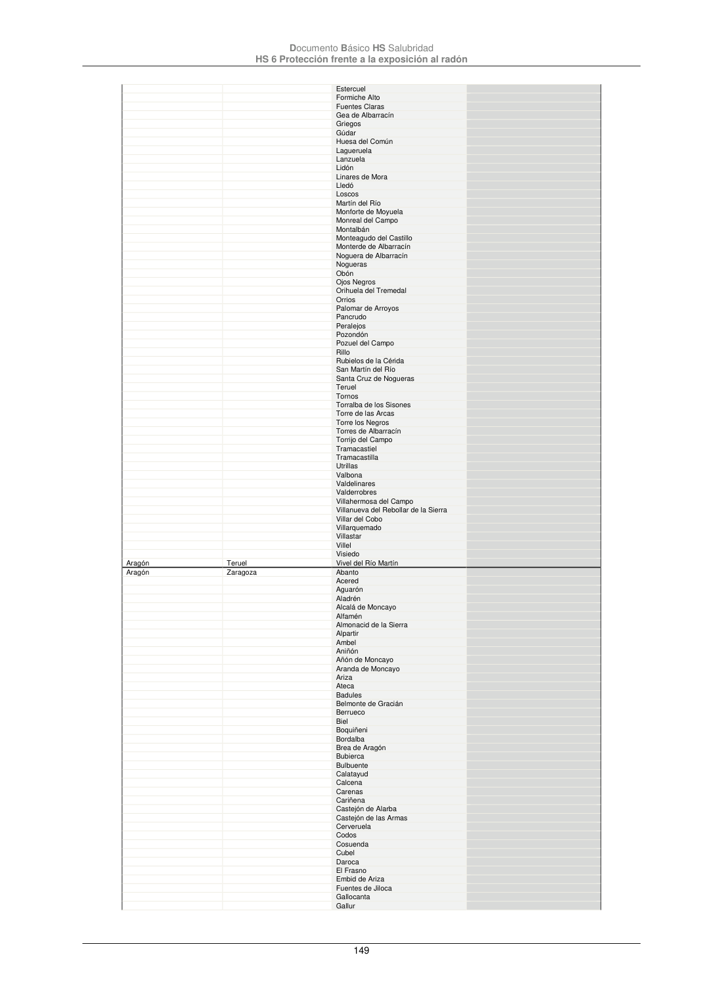

DB-HS Salubridad · edición 2022-06-14 · capa oficial
Documento DB-HS-oficial · SHA-256 del PDF 68df3caacc95f71aee2ec1ba7b2c65ae66155c21e3a8785521b8fdd4fd640d3b
Página física 149 de 184.
Copia fiel del PDF fuente · Fuente oficial
Ficha de la disposición en la fuente oficial
Formato: Texto de la página (Markdown)
Documento Básico HS Salubridad HS 6 Protección frente a la exposición al radón 149 Estercuel Formiche Alto Fuentes Claras Gea de Albarracín Griegos Gúdar Huesa del Común Lagueruela Lanzuela Lidón Linares de Mora Lledó Loscos Martín del Río Monforte de Moyuela Monreal del Campo Montalbán Monteagudo del Castillo Monterde de Albarracín Noguera de Albarracín Nogueras Obón Ojos Negros Orihuela del Tremedal Orrios Palomar de Arroyos Pancrudo Peralejos Pozondón Pozuel del Campo Rillo Rubielos de la Cérida San Martín del Río Santa Cruz de Nogueras Teruel Tornos Torralba de los Sisones Torre de las Arcas Torre los Negros Torres de Albarracín Torrijo del Campo Tramacastiel Tramacastilla Utrillas Valbona Valdelinares Valderrobres Villahermosa del Campo Villanueva del Rebollar de la Sierra Villar del Cobo Villarquemado Villastar Villel Visiedo Aragón Teruel Vivel del Río Martín Aragón Zaragoza Abanto Acered Aguarón Aladrén Alcalá de Moncayo Alfamén Almonacid de la Sierra Alpartir Ambel Aniñón Añón de Moncayo Aranda de Moncayo Ariza Ateca Badules Belmonte de Gracián Berrueco Biel Boquiñeni Bordalba Brea de Aragón Bubierca Bulbuente Calatayud Calcena Carenas Cariñena Castejón de Alarba Castejón de las Armas Cerveruela Codos Cosuenda Cubel Daroca El Frasno Embid de Ariza Fuentes de Jiloca Gallocanta Gallur

Datos candidatos: compruebe celdas y notas en el PDF.